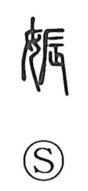

娠

Uncategorized
Kun: haramu, migomoru | On: shin
pregnancy ・ to be pregnant ・ to conceive
Explanation
娠 combines the woman radical with the phonetic 辰 (read shin). 辰 is originally the character behind 蜃, the clam, drawn as a creature stretching out its “legs” and moving; from this image it carries the sense of motion. In 娠 that motion is the stirring of a child in the womb, giving the meanings “to conceive” and “to be pregnant.” Earlier pictographs that express the same idea include 身, a profile of a person with a distended belly, and 孕, which writes the embryo within the belly of a standing woman. In the compound 妊娠, the companion graph 妊 takes 壬 (jin) as its phonetic, a form showing the swollen middle of 工 like a tool’s block, and thus focuses on the swelling of a woman’s belly—another facet of the state named by 娠.